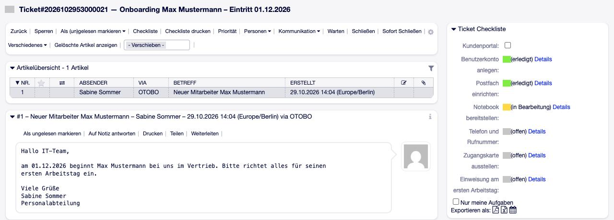
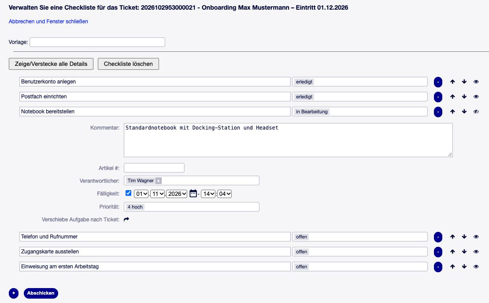
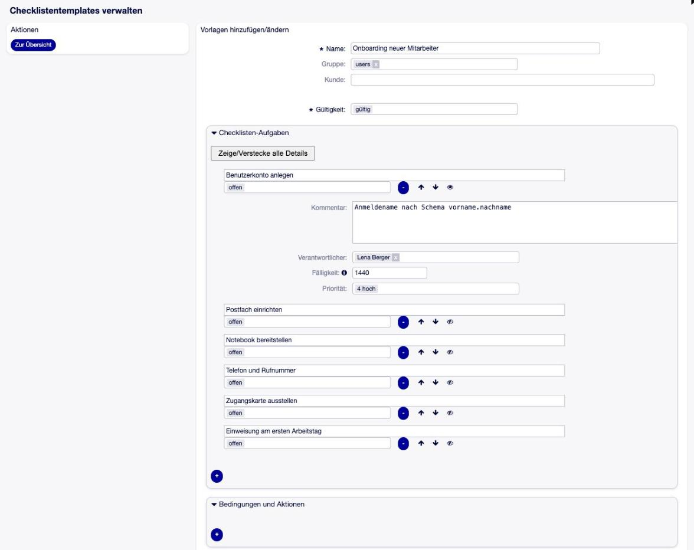
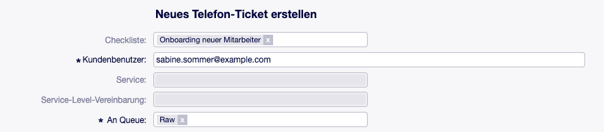
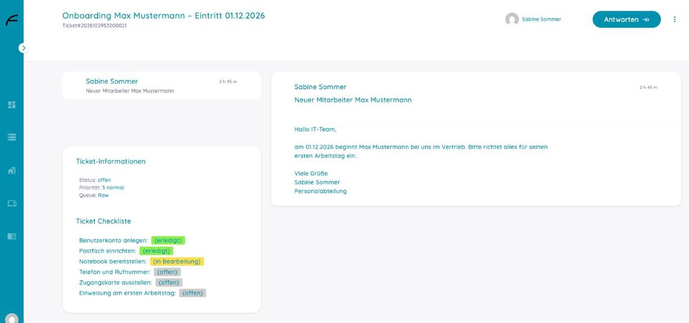

OTOBO TicketChecklist¶
Open Source
TicketChecklist steht unter der GNU Affero General Public License v3.0 (AGPL-3.0). Quelltext, Paket und Lizenztext: https://github.com/FreiconOSS/otobo-addon-ticket-checklist — siehe auch Lizenz und Herkunft.
Beschreibung¶
TicketChecklist gibt OTOBO-Tickets eine Checkliste: eine Liste von Aufgaben, jede mit einem Status und auf Wunsch mit verantwortlichem Agenten, Priorität, Startdatum und Fälligkeit.
Ein typischer Fall: Jedes Onboarding-Ticket braucht dieselben Schritte — Benutzerkonto, Postfach, Notebook, Zugangskarte, Telefon und so weiter. Eine Administratorin legt sie einmal als Checklisten-Vorlage an. Entsteht das Ticket — durch einen Agenten, per E-Mail, durch einen Prozess oder den GenericAgent —, kommt die Vorlage auf das Ticket. Die Agenten haken die Schritte in der Ticketansicht ab, die Verantwortlichen eines Schritts werden benachrichtigt, wenn er fällig wird, und das Ticket zeigt auf einen Blick, ob noch etwas offen ist.
Auf einen Blick
Aufgabenliste je Ticket mit Status, Verantwortlichem, Priorität, Startdatum und Fälligkeit
Vorlagen für wiederkehrende Abläufe, auf Gruppen beschränkbar, als JSON exportier- und importierbar
Bedingungen und Aktionen in der Vorlage, z. B. „ist Aufgabe X erledigt, wird das Ticket erfolgreich geschlossen“
Checkliste kommt per Agent, Ticketmaske, E-Mail-Header, GenericAgent oder Prozess aufs Ticket
Benachrichtigungen vor der Fälligkeit und zum Startdatum
Übersichten „Meine Checklisten-Aufgaben“ und „Tickets mit Checkliste“, Dashboard-Widgets, Einträge im Ereigniskalender
Export als PDF, Excel und Kalender-Aufgabe; Ticket-PDF mit Checkliste
Anzeige der Checkliste im Kundenportal, wenn der Agent sie freigibt
Ein Paket für OTOBO 11.0 und 11.1, kein Core-Override
TicketChecklist ist die Portierung von TicketChecklist 10.1.3 von Perl-Services.de (Renée Bäcker) auf OTOBO 11. Freicon GmbH & Co. KG pflegt sie unter derselben Lizenz weiter.
Einsatzszenarien¶
Onboarding und Offboarding. Ein neuer Mitarbeiter braucht Konto, Postfach, Notebook, Telefon und Zugangskarte — jedes Mal dieselben Schritte, verteilt auf mehrere Personen. Die Vorlage bringt alle Schritte samt Verantwortlichen und Fristen aufs Ticket; nichts wird vergessen, und jeder sieht, was noch fehlt.
Wiederkehrende Wartung. Patchday, Zertifikatstausch, Jahresinventur: Eine Checkliste je Ticket hält fest, welcher Server schon erledigt ist und wer den nächsten übernimmt.
Arbeitsplatzumzug. Netzwerkdose, Telefon, Drucker, Möbel — verschiedene Teams, ein Ticket. Mit Startdatum werden Aufgaben erst zum richtigen Zeitpunkt aktiv und ihre Verantwortlichen erst dann benachrichtigt.
Freigaben im Prozess. Ein Prozess legt per Übergangsaktion die passende Checkliste an; Bedingungen in der Vorlage setzen den Ticketstatus, sobald die letzte Aufgabe erledigt ist.
Überblick¶
Die Checkliste im Alltag — Aufgaben abhaken, Checkliste bearbeiten, Übersichten, Drucken
Einrichten: Vorlagen, Wege aufs Ticket, Benachrichtigungen — Vorlagen anlegen, wie die Checkliste aufs Ticket kommt, Kundenportal, Benachrichtigungen
Beispiel: Onboarding — Onboarding von der Vorlage bis zur letzten Aufgabe
Worauf achten — was man wissen sollte
Technische Referenz — Voraussetzungen, Installation, alle Einstellungen, Meldungen im Protokoll
Die Checkliste im Alltag¶
Die Checkliste im Ticket¶
Rechts in der Ticketansicht zeigt das Widget Ticket Checkliste die Aufgaben des Tickets mit ihrem Status in Farbe; Details zeigt Verantwortlichen, Fälligkeit und Kommentar. Der Ticketbesitzer und der Verantwortliche einer Aufgabe ändern den Status direkt dort.
Kundenportal — gibt die Checkliste für den Kunden frei (nur mit
TicketChecklist::Feature::CustomerVisibility).Nur meine Aufgaben — blendet die Aufgaben anderer Verantwortlicher aus.
Exportieren als — die Checkliste als PDF, Excel-Datei oder Kalender-Aufgabe.

Abb. 1 Das Onboarding-Ticket mit seiner Checkliste: zwei Aufgaben erledigt, eine in Bearbeitung, drei offen.¶
Checkliste bearbeiten¶
Der Menüpunkt Checkliste im Ticketmenü öffnet die Maske für die ganze Liste:
Vorlage — eine Vorlage wählen und ihre Aufgaben übernehmen (ersetzt die vorhandenen, außer
KeepEntriesOnTemplateChangeist an),+ fügt eine Aufgabe hinzu, – entfernt sie, die Pfeile sortieren,
das Augen-Symbol klappt die Details einer Aufgabe auf: Kommentar, Artikel, Verantwortlicher, Fälligkeit, Startdatum (mit
Feature::DateStart) und Priorität; Verschiebe Aufgabe nach Ticket hängt sie an ein anderes Ticket,Zeige/Verstecke alle Details und Checkliste löschen wirken auf die ganze Liste.
Gespeichert wird mit Abschicken.

Abb. 2 Die Checklisten-Maske: oben die Vorlagenauswahl, darunter die Aufgaben mit ihren Details.¶
Fälligkeiten und Startdaten erscheinen in der Zeitzone des Agenten.
Übersichten und Dashboard¶
Tickets → Meine Checklisten-Aufgaben listet alle Aufgaben, für die der Agent verantwortlich ist.
Tickets → Suche Tickets mit Checkliste listet Tickets mit offenen Aufgaben.
Zwei Dashboard-Widgets zeigen dasselbe auf der Startseite; der Ereigniskalender des Dashboards zeigt die Fälligkeiten.
Drucken und Export¶
Checkliste drucken im Ticketmenü erzeugt ein PDF nur der Checkliste. Das Ticket-PDF mit der
Checkliste vor den Artikeln ist der Menüeintrag 210-PrintChecklist — ausgeliefert
abgeschaltet. Ist zusätzlich ChecklistSelectArticle aktiv, wählt der Agent in der
Artikelliste aus, welche Artikel ins PDF kommen.
Einrichten: Vorlagen, Wege aufs Ticket, Benachrichtigungen¶
Checklisten-Vorlagen¶
Admin → Checklisten-Vorlagen verwaltet benannte Listen von Aufgaben. Jede Aufgabe einer Vorlage hat einen Titel und optional:
Status — der Anfangsstatus auf dem Ticket,
Verantwortlicher — ein Agent,
Priorität,
Fälligkeit und Startdatum — in Minuten ab dem Zeitpunkt, an dem die Vorlage aufs Ticket kommt (1440 = ein Tag),
Kommentar — ein Hinweis zur Aufgabe.
Eine Vorlage lässt sich auf Gruppen beschränken: Agenten sehen beim Laden nur die Vorlagen ihrer Gruppen.

Abb. 3 Die Vorlage Onboarding neuer Mitarbeiter: sechs Aufgaben mit Verantwortlichen, Priorität und Fälligkeit in Minuten.¶
Bedingungen und Aktionen. Eine Vorlage kann Regeln mitbringen: Erreicht eine bestimmte Aufgabe einen bestimmten Status, läuft eine Aktion — etwa „Ticketstatus auf erfolgreich geschlossen setzen“. Die Regeln werden beim Laden der Vorlage ans Ticket übernommen.
Export und Import. Vorlagen lassen sich einzeln oder alle zusammen als JSON exportieren
und auf einem anderen System importieren. Gibt es dort schon eine Vorlage gleichen Namens,
wird sie ersetzt (TicketChecklist::OverrideExistingTemplatesOnImport). Verweist eine
importierte Vorlage auf einen Agenten, eine Queue, einen Status oder eine Priorität, die es
nicht gibt, bleibt dieser Wert leer, und das Protokoll vermerkt es.
Wie die Checkliste aufs Ticket kommt¶
Agent. Im Ticketmenü Checkliste Aufgaben von Hand anlegen oder eine Vorlage laden.
Ticket anlegen. Mit TicketChecklist::ShowChecklistInTicketCreate zeigen die Masken
Neues Telefon-Ticket und Neues E-Mail-Ticket ganz oben das Feld Checkliste. Rechts
erscheint eine Vorschau der Aufgaben, die sich vor dem Anlegen noch bearbeiten lässt; wer den
Kunden erst danach auswählt, behält die gewählte Vorlage.

Abb. 4 Neues Telefon-Ticket mit der Vorlage Onboarding neuer Mitarbeiter.¶
E-Mail. Ein neues Ticket bekommt die Vorlage über den Header
X-OTRS-TicketChecklistID: <Vorlagen-ID> oder X-OTRS-TicketChecklistName: <Vorlagenname>;
eine Folge-E-Mail über X-OTRS-FollowUp-TicketChecklistID bzw. -Name.
E-Mail, Aufgaben ändern. X-OTRS-TicketChecklistItem-<n>: <Titel der Aufgabe> plus
X-OTRS-TicketChecklistItem-<n>-Status, -StatusID, -DueDate, -ResponsibleID,
-PriorityID (n = 1 … 20) ändert die Aufgabe dieses Titels am Ticket, zu dem die E-Mail gehört.
GenericAgent. Modul Kernel::System::GenericAgent::AddChecklistToTicket mit dem
Parameter TemplateID bringt eine Vorlage aufs Ticket. Modul
Kernel::System::GenericAgent::ChangeChecklistItems ändert Aufgaben: Item_1 (Titel der
Aufgabe) mit Status_1, DueDate_1, Responsible_1 (Login), Priority_1 (Name);
Item_2 … ebenso.
Prozess. Übergangsaktion AddChecklist (Konfiguration TemplateID) und
ChangeChecklistItems (dieselben Item_<n>-Schlüssel wie beim GenericAgent).
Die E-Mail-Header behalten das Präfix X-OTRS- des Originals; bestehende Postmaster-Filter
und sendende Systeme arbeiten unverändert weiter.
Kundenportal¶
Mit TicketChecklist::Feature::CustomerVisibility kann ein Agent die Checkliste eines
Tickets für den Kunden freigeben. Der Kunde sieht dann in seiner Ticketansicht die Aufgaben und
ihren Status — bearbeiten kann er sie nicht. Mit Queues::CustomerVisibility ist die
Checkliste in ausgewählten Queues von vornherein sichtbar.

Abb. 5 Dasselbe Onboarding-Ticket im Kundenportal: Die Personalabteilung sieht, welche Schritte erledigt sind.¶
Checklisten-Status¶
Admin → Checklisten-Status verwaltet die Status der Aufgaben samt Farbe. Installiert sind offen, erledigt, abgelehnt, warten und in Bearbeitung. Ein Status, den eine Aufgabe noch verwendet, lässt sich nicht löschen.
Welche Status als „offen“, „wartend“ oder „versteckt“ zählen, legen OpenStates,
WaitingStates und HiddenStates fest (siehe Konfiguration).
Checklisten-Benachrichtigungen¶
Admin → Checklistenbenachrichtigungen verwaltet die Texte, die verschickt werden, wenn eine Aufgabe fällig wird, ihr Startdatum erreicht oder geändert wird — je Ereignis und Sprache. Installiert sind deutsche Texte für Verantwortlicher geändert, Status geändert und Fälligkeit naht. Gibt es für ein Ereignis keinen Text in der Sprache des Agenten, wird nichts verschickt.
Agenten schalten die Benachrichtigungen in ihren persönlichen Einstellungen ein und aus (Gruppe Checklisten-Benachrichtigungen).
Beispiel: Onboarding¶
Admin → Checklisten-Vorlagen → Vorlage hinzufügen: Name Onboarding neuer Mitarbeiter, Aufgaben Benutzerkonto anlegen (Verantwortlich: IT, Fälligkeit 1440 = ein Tag), Notebook bereitstellen (Fälligkeit 4320 = drei Tage), Zugangskarte ausstellen (Startdatum 7200 = fünf Tage, Fälligkeit 10080 = sieben Tage). Gruppe: users.
TicketChecklist::ShowChecklistInTicketCreateeinschalten und, für das Startdatum,TicketChecklist::Feature::DateStart.Ein Telefon-Ticket anlegen und im Feld für die Checkliste Onboarding neuer Mitarbeiter wählen. Die Ticketansicht zeigt die drei Aufgaben; Zugangskarte ausstellen steht auf warten.
Die IT bekommt eine Stunde vor der Fälligkeit von Benutzerkonto anlegen eine Benachrichtigung (
TicketChecklist::DueDateBefore) und setzt die Aufgabe im Widget auf erledigt.Fünf Tage später stellt der Daemon Zugangskarte ausstellen auf offen und benachrichtigt den Verantwortlichen.
Tickets → Suche Tickets mit Checkliste führt das Ticket, bis alle Aufgaben erledigt sind; das dynamische Feld
TicketHasOpenTodossteht für Suchen, ACLs und den GenericAgent bereit.
Dieselbe Vorlage kann auch per E-Mail kommen (X-OTRS-TicketChecklistName: Onboarding neuer
Mitarbeiter) oder aus einem Prozess (Übergangsaktion AddChecklist mit der ID der Vorlage).
Worauf achten¶
Der Titel ist der Schlüssel. E-Mail-Header, GenericAgent und Prozess finden eine Aufgabe über ihren Titel. Stehen zwei Aufgaben gleichen Titels auf einem Ticket, wird nur die erste geändert.
Höchstens 20 Aufgaben je E-Mail lassen sich mit
X-OTRS-TicketChecklistItem-<n>ändern.Die E-Mail-Header behalten das Präfix
X-OTRS-des Originals.Kunden sehen, bearbeiten aber nicht. Im Kundenportal ist die Checkliste nur eine Anzeige.
Ohne Daemon keine Benachrichtigungen und keine Startdaten.
Alles drin. Prioritäten, Verantwortliche, Fälligkeiten, Benachrichtigungen, Übersichten, Sortierung und Vorlagen — beim Original als Pro-Funktionen verkauft — gehören zu diesem Paket.
Technische Referenz¶
Dieser Teil richtet sich an Administratoren: Voraussetzungen, Installation, wie das Addon intern arbeitet, alle Einstellungen der Systemkonfiguration, Meldungen im Protokoll und die gespeicherten Daten.
Systemvoraussetzungen¶
Framework¶
OTOBO 11.0.x oder 11.1.x — ein Paket für beide Versionen.
Pakete¶
Keine.
Software von Drittanbietern¶
Das Perl-Modul Net::LDAP — nur, wenn Verantwortliche aus einem LDAP-Verzeichnis gewählt
werden sollen (ein optionales Modul von OTOBO, siehe bin/otobo.CheckModules.pl).
Installation¶
Das Paket wird wie jedes OTOBO-Paket über Admin → Paketverwaltung installiert. Es legt
seine Tabellen, die Status offen, erledigt, abgelehnt, warten und in Bearbeitung,
deutsche Benachrichtigungstexte und vier interne dynamische Felder an (siehe
Gespeicherte Daten). Die E-Mail-Header für Checklisten trägt es in PostmasterX-Header ein.
Damit Benachrichtigungen und Startdaten wirken, muss der OTOBO-Daemon laufen.
Umstieg von Version 10.1.3¶
Das Paket wird über die alte Version installiert. Das Upgrade holt die Dateien aus
Custom/, stellt den Gruppenschlüssel der Vorlagen auf die OTOBO-11-Tabelle um und entfernt
die alte Einstellung Ticket::CustomModule###10001-TicketChecklist. Vorlagen, Aufgaben und
Status bleiben erhalten. Die Beispieldatei Kernel/Config/Files/ZZZChecklist.pm der alten
Version entfällt.
Wie das Addon arbeitet¶
Die Aufgaben einer Checkliste gehören zu genau einem Ticket. Jede Änderung — neue Aufgabe, neuer Status, neuer Verantwortlicher, neue Fälligkeit — löst ein Checklisten-Ereignis aus. Daran hängen Tickethistorie, Änderungsnotiz, Benachrichtigungen, die dynamischen Felder und die Bedingungen der Vorlage.
Der Daemon prüft alle zehn Minuten die Fälligkeiten und Startdaten: Er benachrichtigt den Besitzer bzw. Verantwortlichen einer Aufgabe, deren Fälligkeit naht, und stellt Aufgaben, deren Startdatum erreicht ist, von warten auf offen.
Die Checkliste erscheint als Widget rechts in der Ticketansicht, in zwei Dashboard-Widgets, in den Übersichten Meine Checklisten-Aufgaben und Suche Tickets mit Checkliste, im Ereigniskalender, im PDF — und im Kundenportal, wenn sie dort freigegeben ist.
Konfiguration¶
Alle Einstellungen stehen in der Systemkonfiguration unter Core → TicketChecklist und ihren Untergruppen. Angegeben sind die ausgelieferten Standardwerte.
Allgemein — Core → TicketChecklist¶
TicketChecklist::DefaultState— Standard: openStatus einer neuen Aufgabe.
TicketChecklist::DefaultPriority— Standard: 3 normalPriorität einer neuen Aufgabe (es gelten die Ticketprioritäten). Auch der Rückfallwert, wenn eine Aufgabe ohne Priorität gespeichert wird.
TicketChecklist::PrioritySource— Standard: DefaultPriorityWoher die Priorität einer neuen Aufgabe kommt: aus der Einstellung oben oder aus der Priorität des Tickets.
TicketChecklist::OpenStates— Standard: openStatus, die als „offen“ zählen (Übersichten, dynamisches Feld
TicketHasOpenTodos).TicketChecklist::WaitingStates— Standard: waitingStatus von Aufgaben, die auf ihr Startdatum warten.
TicketChecklist::HiddenStates— Standard: leer, deaktiviertAufgaben in diesen Status erscheinen nicht im Widget der Ticketansicht.
TicketChecklist::ClosedState— Standard: doneStatus, den die Aufgaben bekommen, wenn das Ticket geschlossen wird (Ereignis
1032-CloseChecklistItems, standardmäßig aus).TicketChecklist::Theme— Standard: StandardAussehen der Checklisten-Maske: Standard oder Slim.
TicketChecklist::DetailsInWidget— Standard: LinkWie das Widget die Details einer Aufgabe zeigt: als Link, beim Überfahren mit der Maus oder gar nicht.
TicketChecklist::Widget::ShowResponsibleFullname— Standard: ausZeigt im Widget den vollen Namen des Verantwortlichen statt des Logins.
TicketChecklist::ReloadChecklist— Standard: ausLädt das Widget neu, nachdem eine Aufgabe geändert wurde.
TicketChecklist::ReloadTicketZoom— Standard: ausLädt die ganze Ticketansicht neu, nachdem eine Aufgabe geändert wurde.
TicketChecklist::AllUsersForResponsibles— Standard: anAlle Agenten sind als Verantwortliche wählbar. Aus: nur Agenten mit Leserecht (
ro) auf die Queue des Tickets.TicketChecklist::AllAgentsStatusChange— Standard: ausJeder Agent darf den Status jeder Aufgabe ändern. Aus: nur der Ticketbesitzer und der Verantwortliche der Aufgabe.
TicketChecklist::RWGroups— Standard: leer, deaktiviertNur Mitglieder dieser Gruppen (mit
rw) dürfen die Checkliste bearbeiten.TicketChecklist::HardDeleteItems— Standard: anAn: Eine in der Maske entfernte Aufgabe wird sofort gelöscht. Aus: erst beim Speichern der Checkliste.
TicketChecklist::ConfirmDeleteItems— Standard: ausFragt nach, bevor eine Aufgabe entfernt wird.
TicketChecklist::KeepEntriesOnTemplateChange— Standard: ausBeim Laden einer Vorlage werden ihre Aufgaben ergänzt, statt die vorhandenen zu ersetzen.
TicketChecklist::ShowChecklistInTicketCreate— Standard: ausVorlagenauswahl in den Masken Neues Telefon-Ticket und Neues E-Mail-Ticket.
TicketChecklist::AllowMultiChecklistsInTicketCreate— Standard: ausZeigt neben dieser Auswahl „Fügt Punkte zur bestehenden Checkliste hinzu“.
TicketChecklist::OverrideExistingTemplatesOnImport— Standard: anEin Vorlagen-Import ersetzt Vorlagen mit gleichem Namen.
TicketChecklist::ShowExportIcons— Standard: Ticketansicht an, Dashboard (Meine Aufgaben) ausWo die Symbole für PDF, Excel und Kalender-Aufgabe erscheinen.
TicketChecklist::PrintItemComment— Standard: ausDruckt den Kommentar einer Aufgabe im Ticket-PDF mit.
TicketChecklist::PastDueDatesAllowed— Standard: anAus: Eine Fälligkeit in der Vergangenheit wird abgelehnt.
TicketChecklist::DueDateYearsInPast— Standard: 0Wie viele Jahre zurück die Datumsauswahl anbietet.
TicketChecklist::DynamicFieldHasOpenTodos— Standard: TicketHasOpenTodosDynamisches Feld, das festhält, ob das Ticket offene Aufgaben hat.
TicketChecklist::Condition::MultiState— Standard: ausEine Bedingung in der Vorlage darf mehrere Status nennen (oder-verknüpft).
TicketChecklist::AllowTicketsAsItems— Standard: ausAls Titel einer Aufgabe darf eine Ticketnummer stehen; die Aufgabe folgt dann diesem Ticket.
TicketChecklist::LinkTickets— Standard: ausZusammen mit der Option oben: das genannte Ticket als Kind mit diesem verknüpfen.
TicketChecklist::TicketStateToItemState— Standard: neu/offen/warten → open, zusammengefasst/erfolgreich geschlossen → done, …Ticketstatus → Aufgabenstatus, für Tickets als Aufgaben.
TicketChecklist::ItemStateToTicketState— Standard: open → offen, done → erfolgreich geschlossen, rejected → erfolglos geschlossenAufgabenstatus → Ticketstatus, für Tickets als Aufgaben.
TicketChecklist::Debug— Standard: ausDebug-Ausgaben ins OTOBO-Protokoll.
Ticket::Frontend::HistoryTypes###212-ChecklistZeigt die Checklisten-Einträge in der Tickethistorie.
Funktionen — Core → TicketChecklist → Features¶
TicketChecklist::Feature::DateStart— Standard: ausAufgaben bekommen ein Startdatum. Bis dahin stehen sie auf warten; der Daemon öffnet sie.
TicketChecklist::Feature::CustomerVisibility— Standard: ausAgenten können die Checkliste eines Tickets im Kundenportal anzeigen.
TicketChecklist::Feature::FromTextarea— Standard: ausAufgaben lassen sich als Zeilen eines Textfelds eingeben.
Queues::CustomerVisibility(Untergruppe CustomerVisibility) — Standard: deaktiviert, Beispiel Misc → 1Queues, in denen die Checkliste standardmäßig für den Kunden sichtbar ist.
Benachrichtigungen — Core → TicketChecklist → Notifications¶
TicketChecklist::DueDateBefore— Standard: 60Minuten vor der Fälligkeit, zu denen benachrichtigt wird.
TicketChecklist::NotificationTimes— Standard: deaktiviert, Beispiel -60m, -5dMehrere Zeitpunkte vor der Fälligkeit statt des einen oben.
TicketChecklist::NotificationTimesSpan— Standard: 10Minuten, die um jeden dieser Zeitpunkte geprüft werden — sollte dem Daemon-Intervall entsprechen.
TicketChecklist::DateStartBefore— Standard: 60Minuten vor dem Startdatum, zu denen benachrichtigt wird.
TicketChecklist::StartNotificationTimes— Standard: deaktiviert, Beispiel -60m, -5dWie
NotificationTimes, für das Startdatum.TicketChecklist::StartNotificationTimesSpan— Standard: 10Wie
NotificationTimesSpan, für das Startdatum.TicketChecklist::NotificationQueueExclude— Standard: deaktiviert, Beispiel JunkKeine Checklisten-Benachrichtigungen für Tickets in diesen Queues.
PreferencesGroups###ChecklistNotifications— Standard: aktivDie persönliche Einstellung, mit der Agenten die Benachrichtigungen ein- und ausschalten.
Startdatum — Core → TicketChecklist → StartDate¶
TicketChecklist::StartDate::NewState— Standard: openStatus, den eine Aufgabe bekommt, wenn ihr Startdatum erreicht ist.
Änderungsnotizen — Core → TicketChecklist → ChangeNote¶
TicketChecklist::ShowChangeNotes— Standard: ausAgenten können eine Notiz erfassen, wenn sie eine Aufgabe in der Maske ändern.
TicketChecklist::ShowChangeNotesWidget— Standard: ausDasselbe, wenn der Status im Widget geändert wird.
TicketChecklist::ChangeNoteAsArticle— Standard: ausDie Notiz wird ein Artikel am Ticket.
TicketChecklist::ChangeNoteArticle###Type— Standard: note-internalArtikeltyp dieses Artikels.
TicketChecklist::ChangeNoteArticle###Subject— Standard: TODO changedBetreff dieses Artikels.
TicketChecklist::ChangeNoteAsNotification— Standard: anDie Notiz ist Teil der Änderungsbenachrichtigung.
TicketChecklist::SaveChangeNote— Standard: ausDie Notiz wird an der Aufgabe gespeichert.
TicketChecklist::EditChangeNote— Standard: ausEine gespeicherte Notiz lässt sich bearbeiten.
TicketChecklist::ChangeNoteDialogRows/…Cols— Standard: 10 / 40Größe des Notizfelds.
TicketChecklist::ChangeNote::ASCII2HTML— Standard: ausZeigt die Notiz mit Zeilenumbrüchen und maskiertem HTML.
TicketChecklist::ChangeNote::URLAutolink— Standard: ausMacht Adressen in der Notiz zu Links (braucht die Option oben).
Kommentare — Core → TicketChecklist → Comment¶
TicketChecklist::Comment::ASCII2HTML— Standard: ausZeigt den Kommentar einer Aufgabe mit Zeilenumbrüchen und maskiertem HTML.
TicketChecklist::Comment::URLAutolink— Standard: ausMacht Adressen im Kommentar zu Links (braucht die Option oben).
Verantwortliche — Core → TicketChecklist → Responsible¶
TicketChecklist::ResponsibleAutocomplete— Standard: ausErsetzt die Auswahlliste der Verantwortlichen durch ein Suchfeld mit Vorschlägen.
TicketChecklist::ResponsibleAutocompleteModule— Standard: AgentQuelle dieses Suchfelds: Agent, LDAP, Groups oder Roles.
Die Quelle LDAP liest ihre Verbindung aus dem Hash TicketChecklist::ResponsibleLDAP.
Er ist keine Einstellung der Systemkonfiguration und hat keinen Standardwert; er gehört in
Kernel/Config.pm, im selben Aufbau wie ein LDAP-Backend für Kundenbenutzer:
$Self->{'TicketChecklist::ResponsibleLDAP'} = {
Params => {
Host => 'ldap.example.com',
BaseDN => 'ou=people,dc=example,dc=com',
SSCOPE => 'sub',
UserDN => '', # leer = anonymer Bind
UserPw => '',
AlwaysFilter => '', # z. B. '(objectclass=user)'
Die => 0,
Params => { port => 389, timeout => 120, async => 0, version => 3 },
},
UserKey => 'uid',
UserListFields => [ 'cn', 'mail' ],
UserSearchFields => [ 'uid', 'cn', 'mail' ],
UserSearchPrefix => '',
UserSearchSuffix => '*',
UserSearchListLimit => 250,
UserNameFields => [ 'givenname', 'sn' ],
CacheTTL => 0,
Map => [ ... ], # wie in einem LDAP-Backend für Kundenbenutzer
};
Kalender — Core → TicketChecklist → Calendar¶
TicketChecklist::Calendar::Color— Standard: #cdcdcdFarbe der Checklisten-Einträge im Ereigniskalender des Dashboards.
TicketChecklist::Calendar::TitleFormat— Standard:#[% Data.TicketNumber %] - [% Data.Title %]Titel eines Eintrags.
TicketChecklist::Calendar::InfoFormat— Standard:[% Data.TicketNumber %] - [% Data.Title %]Text beim Überfahren eines Eintrags mit der Maus.
Ereignisse — Core → Event¶
Ticket-Ereignisse (Ticket::EventModulePost###…):
1031-MergeTicketChecklists— anVerschiebt die Aufgaben eines zusammengefassten Tickets ins Zielticket.
1032-CloseChecklistItems— ausSetzt alle Aufgaben auf
TicketChecklist::ClosedState, wenn das Ticket geschlossen wird.1033-UpdateChecklistItems— anHält Aufgaben, die für ein Ticket stehen, mit diesem Ticket gleich.
1037-SetTicketChecklists— anBringt die in der Ticketmaske gewählte Vorlage auf das neue Ticket.
Checklisten-Ereignisse (TicketChecklist::EventModule###…), alle an: 001-Notifications,
002-TicketHistory, 003-ChangeNote, 004-SetHasOpenTodos, 005-ConditionAction
(Bedingungen und Aktionen der Vorlage), 006-SetHasChecklist,
007-SetDefaultCustomerVisibility, 011-SetTicketState, 012-ForeignTickets,
020-RemoveTicketInfoFlags.
Daemon — Daemon → SchedulerCronTaskManager → Task¶
ChecklistNotifications— alle 10 MinutenMaint::Ticket::ChecklistNotifications: Benachrichtigungen zur Fälligkeit.ChecklistStartDateNotifications— alle 10 MinutenMaint::Ticket::ChecklistStartDateNotifications: Benachrichtigungen zum Startdatum.ChecklistSetStartDateStatus— alle 10 MinutenMaint::Ticket::ChecklistSetStartDateStatus: warten →StartDate::NewState.ChecklistClearPreferences— sonntags, zwischen 0 und 1 Uhr alle 10 MinutenMaint::Ticket::ChecklistClearPreferences: setzt zurück, für welche Tickets ein Agent sich alle Aufgaben anzeigen lässt.
Registrierung¶
Diese Einstellungen melden die Teile des Addons in OTOBO an. Sie werden nur geändert, um einen Menüeintrag oder ein Widget zu verschieben oder abzuschalten.
Frontend::Module###AgentTicketChecklistund die übrigen AgentenmoduleChecklisten-Maske, Vorlagen laden, Statuswechsel, Verantwortlichen-Suche, Kundenportal-Schalter, Kalender, Druck, Export, Übersichten — alle an.
Frontend::Module###AdminTicketChecklistStates,…Templates,…NotificationsDie drei Admin-Masken und ihre Kacheln in der Admin-Übersicht — an.
Frontend::Navigation###AgentChecklistTickets###002-TicketChecklist,###AgentChecklistMyTodo###002-TicketChecklistHauptmenü Tickets → Suche Tickets mit Checkliste und Meine Checklisten-Aufgaben — an. Alle anderen
Frontend::Navigation###…###002-TicketChecklist-Einträge sind ausgeliefert deaktiviert.Ticket::Frontend::MenuModule###212-Checklist,###213-ChecklistPrintTicketmenü Checkliste und Checkliste drucken — an.
Ticket::Frontend::MenuModule###210-PrintChecklistTicketmenü Drucken: Ticket-PDF mit der Checkliste vor den Artikeln — aus.
Ticket::Frontend::AgentTicketZoom###Widgets###002-TicketChecklistWidget in der Ticketansicht — an.
DashboardBackend###0991-ChecklistItems,###0992-ChecklistTicketDashboard-Widgets — an.
Frontend::Output::FilterElementPost###OutputFilterTicketChecklistDropdownVorlagenauswahl in den Ticketmasken — an.
Frontend::Output::FilterElementPost###TicketChecklistCalendarAufgaben im Ereigniskalender des Dashboards — an.
Frontend::Output::FilterElementPost###CustomerTicketChecklistCheckliste in der Ticketansicht des Kundenportals — an.
Frontend::Output::FilterElementPost###ChecklistSelectArticleAuswahlkästchen in der Artikelliste, um die Artikel fürs Ticket-PDF zu wählen — aus.
Frontend::Template::GenerateBlockHooks###132-TicketChecklistBlock-Hooks, die die Ausgabefilter brauchen — an.
Loader::Module::…###00x-TicketChecklist,Loader::Agent::CommonCSS###100001-TicketChecklist,Loader::Customer::CommonCSS###100001-TicketChecklistJavaScript und CSS — an.
PostMaster::PostFilterModule###015-TicketChecklist,###016-TicketChecklistItemDie E-Mail-Header aus Wie die Checkliste aufs Ticket kommt — an.
Stats::DynamicObjectRegistration###TicketChecklistStatusFilterTicketstatistik mit Filter auf den Aufgabenstatus — an.
AutoloadPerlPackages###2000-TicketChecklistEntfernt die Checkliste, wenn ein Ticket gelöscht wird — an.
Meldungen im Protokoll¶
Need TicketChecklist::ResponsibleLDAP->Params->Host in Kernel/Config.pm(ebensoBaseDN,SSCOPE,UserKey)Als Quelle der Verantwortlichen ist LDAP gewählt, der Hash
TicketChecklist::ResponsibleLDAPfehlt aber oder ist unvollständig.Can't connect to <host>: …/First bind failed! …/Search failed! …LDAP-Server nicht erreichbar, falscher Bind-Benutzer oder falsche Base-DN.
Need UserID!Ein GenericAgent-Job oder eine Übergangsaktion ist ohne diesen Parameter eingerichtet.
Need TemplateID!GenericAgent-Modul oder Übergangsaktion
AddChecklistohneTemplateID.Templatename already existsEine Vorlage wurde unter einem vergebenen Namen gespeichert. Beim Import siehe
OverrideExistingTemplatesOnImport.Import: Can' find user/queue/state/priority …Die importierte Vorlage nennt etwas, das es auf diesem System nicht gibt; der Wert bleibt leer.
Could not find notification for <event> (<language>)(nur im Debug-Protokoll)Für dieses Ereignis gibt es keinen Benachrichtigungstext in der Sprache des Agenten, also wird keine verschickt. Soll eine verschickt werden: Text unter Admin → Checklistenbenachrichtigungen anlegen.
State name alread in useEinen Status dieses Namens gibt es schon.
Gar keine Benachrichtigungen? Prüfen, ob der Daemon läuft (bin/otobo.Daemon.pl
status), ob der Agent sie in seinen Einstellungen abgeschaltet hat und ob die Queue des
Tickets in TicketChecklist::NotificationQueueExclude steht.
Gespeicherte Daten¶
ps_ticketchecklistDie Aufgaben: Ticket, Titel, Position, Status, Priorität, Verantwortlicher, Start und Fälligkeit, Kommentar, Änderungsnotiz.
ps_ticketchecklist_statusStatus und Farben.
ps_checklist_template,ps_checklist_tmpl_grpVorlagen und ihre Gruppen.
ps_checklist_notifyBenachrichtigungstexte je Ereignis und Sprache.
ps_checklist_ticket_infoJe Ticket: ob die Checkliste im Kundenportal sichtbar ist.
Bei der Installation entstehen vier interne dynamische Felder am Ticket:
TicketHasOpenTodos, TicketHasChecklist, TicketChecklistTemplates (die verwendeten
Vorlagen) und TicketChecklistConditionActions (die aus den Vorlagen übernommenen
Bedingungen und Aktionen). Die ersten beiden eignen sich für Suchen, ACLs und den GenericAgent.
Zeiten werden in OTOBO-Zeit gespeichert (OTOBOTimeZone) und in der Zeitzone des Agenten
angezeigt.
Lizenz und Herkunft¶
TicketChecklist wurde von Renée Bäcker (Perl-Services.de) geschrieben und unter der GNU Affero
General Public License v3.0 veröffentlicht. Das Repository beginnt mit der unveränderten
Version 10.1.3; darauf folgen die Änderungen für OTOBO 11 durch Freicon GmbH & Co. KG
(Oktober 2026): Zeitverarbeitung auf Kernel::System::DateTime, die umbenannte
Gruppentabelle, das Ticket-PDF auf dem PDF-Backend von OTOBO 11, ein Autoload statt
Ticket::CustomModule, Dateien aus Custom/ heraus, die Navigation der
Systemkonfiguration, keine LDAP-Beispielkonfiguration mehr, und einige Fehler, die dabei
auffielen. Jede geänderte Datei trägt einen Änderungsvermerk mit Datum.
Das ganze Werk bleibt unter AGPL-3.0. Der Lizenztext liegt im Repository und wird im Paket als
var/doc/TicketChecklist/COPYING mitgeliefert. Wer eine veränderte Fassung Benutzern über ein
Netzwerk anbietet, muss ihnen nach §13 der AGPL den Quelltext dieser Fassung zugänglich machen.
Mitwirkende am Original: Denny Bresch (Übersetzungen, HTML), Balázs Úr (ungarische Übersetzung).